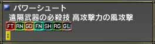

目次
>
ゲームについて
>
日本Falcom攻略
>
Sorcerian Online
>
チュートリアル
>
武器スキル
Sorcerian Online
|
概要
|
チュートリアル
|
|
武器スキル に戻る
|
その他
クラスとの相性
武器スキルのレベル上げ
レベルが上がると威力も上がる?
必要パラメーターを満たしていない武器を装備した場合
クラスとの相性
武器スキルとクラスはある程度つながりがあります。クラスに応じて伸びるステータスも違うので、
相性の合わない武器を使うことはあまり効率的とはいえません
。
クラスにあった武器を使わないと武器スキルのレベルを10以上にしても特殊武器スキルを覚えるできない場合があります
。
クラスを選ぶときに、どのような武器がいいのかという説明が出るので、それに従うのが無難のようです。
(ヒーラー・プリースト等が使えない)

(魔法を使うクラスが全て使えない)
武器スキルのレベル上げ
武器スキルのレベルを上げるときには注意が必要です。
それは武器スキルのレベルを効率的に上げる場合、
倒す敵は武器スキルのレベルにあった敵にしなければならない
ということです。
この武器スキルのレベルにあった敵とは、
{ ( 武器スキルのランク - 1 ) * 100 + 武器スキルのレベル } / 10
程度です。
具体的な例を挙げると
・ランク1 でレベルが30 の場合・・・レベル2、3 の敵
・ランク2 でレベルが80 の場合・・・れべる17、18 の敵
武器スキルはクラススキルと異なり、
それぞれの武器スキルで適正値が設定されています
。そのため、片方のスキルレベルが100 になっていても、他方スキルの適正値の敵を倒せばレベルは上がります。
敵を倒したときの武器スキルレベルの上昇のイメージ。(L-1) の敵を倒すと非常に効率がいいのですが、(L-2)、(L+2) の敵を倒すと全く上昇しません。
レベルが上がると威力も上がる?
武器スキルのレベルが上がると、同じ武器でも攻撃力が上がるかどうか、管理人が調べました。
クラスは両方ともランク1 のレベル100 とし、片手剣のランク1 でブロンズレイピアを装備した状態で威力が上がるかどうかを調べました。当然の事ながら、武器以外の装備品も調査中にいっさい変更していません。
レベル0 のGrassRabbit に対する一発目の攻撃のダメージ(クリティカルを除く)を見たところ、
武器スキル
レベル0
： 22 ～ 27
武器スキル
レベル100
： 29 ～ 33
という値が出ました。両方とも約5程度のばらつきが出ますが、
武器スキルレベルを上げれば同じ武器でも確実に威力は上がります
。
必要パラメーターを満たしていない武器を装備した場合
必要パラメーターを満たしていない武器を装備すると、
特殊武器スキルが使えなくなります
。他にも装備しても
装備品の効果が十分に引き出せなかった
り、
星魔法の効果が無効
になるペナルティーがあります。そのため余程のことがない限り、このようなものを装備しない方がいいです。
必要パラメーターを満たしていない武器とは、装備すると黄色で表示される装備のことです。
(ラビットボウがステータスが足りず、黄色表示)
|
武器スキル に戻る
|
|
概要
|
チュートリアル
|
Sorcerian Online
|
目次へ戻る
|
ページの上部へ
|